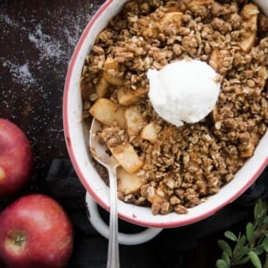

Healthy Apple Crisp

Ingredients
For The Topping:
- ⅓ cup (38g) whole wheat pastry
-
flour (or regular flour or gluten free oat flour or
almond flour)
-
½ cup (48g) old fashioned rolled oats, gluten free if desired.
-
⅓ cup (71g) dark brown sugar
(can also sub coconut sugar but brown sugar is best)
- ½ cup (56g) raw chopped pecans
- ¼ teaspoon cinnamon
-